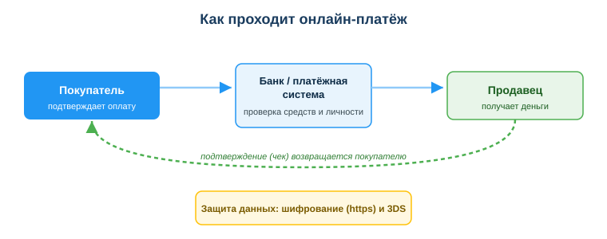
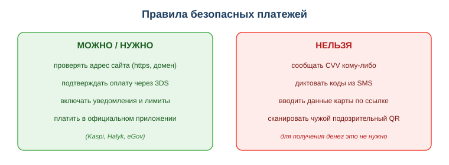

Расширенный учебный материал по теме
Занятие 23. Использовать электронные платежи и онлайн-банкинг (Kaspi, Halyk, QR)
Дисциплина: Применение информационно-коммуникационных и цифровых технологий
Результат обучения: РО 2.2 — использование услуг веб-порталов и цифровых сервисов · Объём темы: 2 часа
Квалификация: 4S06130103 «Разработчик программного обеспечения»
Это расширенный разбор темы для самостоятельного изучения. Он подробнее, чем конспект урока: здесь каждый шаг платежа, каждое правило безопасности и каждая «уловка» мошенника объясняются глубоко, с примерами и разбором. Читай его как «учебник по теме»: после него ты не просто запомнишь, что «CVV давать нельзя», а поймёшь, почему нельзя и как именно устроен путь твоих денег.
1. Введение: зачем тебе эта тема
Вспомни ситуацию из урока. Ты выставил на OLX старый ноутбук, и через час приходит сообщение: «Готов оплатить, скинь номер карты, срок действия, CVV и код, который придёт в SMS, — иначе перевод не уйдёт». На первый взгляд звучит почти убедительно: человек как будто хочет тебе заплатить. Но в этой фразе спрятана ловушка, и если ты её не распознаешь, деньги уйдут не к тебе, а с твоего счёта. Ключ к разгадке — понимание того, как вообще устроен электронный платёж. Для зачисления денег чужие данные карты не нужны в принципе: достаточно знать, куда перевести (номер карты или телефона получателя). А вот CVV и код из SMS — это инструменты списания, то есть ключи от твоего кошелька. Продиктовав их, ты своими руками открываешь дверь.
Эта тема важна тебе сразу по двум причинам. Первая — бытовая. Казахстан входит в число стран с самым высоким уровнем безналичных платежей: картой и QR здесь платят в маленьких ларьках и на рынках, переводы по номеру телефона стали нормой, а коммунальные услуги, штрафы и налоги оплачивают в приложении банка или на eGov.kz. Ты совершаешь такие операции каждый день, и каждая из них — потенциальная точка, где можно потерять деньги из-за одной ошибки. Деньги в онлайне двигаются быстро, и многие операции нельзя «откатить»: перевёл мошеннику — вернуть почти невозможно.
Вторая причина — профессиональная, и она касается тебя как будущего разработчика. Программист не «переписывает деньги вручную». Когда интернет-магазину нужна оплата картой, разработчик подключает к приложению платёжный шлюз — сервис банка или платёжной системы, который принимает деньги по защищённым правилам. Чтобы сделать это правильно, нужно понимать поток платежа, требования к защите данных карты и механизм подтверждения операции (3-D Secure). Иными словами, всё, что ты узнаешь сегодня как пользователь, завтра станет фундаментом, на котором ты будешь строить платёжные функции в чужих и своих проектах. Тот, кто понимает платёж изнутри, пишет безопасный код; тот, кто не понимает, — оставляет дыры, через которые утекают чужие деньги.
2. Что ты узнаешь и чему научишься
После изучения темы ты сможешь:
- объяснять по шагам, как проходит электронный платёж и кто в нём участвует (покупатель, банки, платёжная система, продавец);
- понимать, что такое 3-D Secure и почему этот код подтверждает именно списание;
- безопасно оплачивать по QR-коду и отличать настоящий QR от поддельного;
- применять правила безопасных платежей: не сообщать CVV и коды из SMS, проверять адрес сайта и получателя;
- распознавать типичные схемы платёжного мошенничества (звонок «из банка», сайт-двойник, «получите кешбэк»);
- настраивать базовую защиту банковского приложения (уведомления, лимиты, биометрия, 3DS);
- объяснять, как разработчик подключает платежи через шлюз/API и почему данные карты не должны проходить через его собственный код.
3. Ключевые понятия
- Электронный платёж — перевод денег в безналичной форме через банк или платёжную систему, который плательщик подтверждает онлайн.
- Эквайринг — услуга банка по приёму карточных платежей в пользу продавца.
- Платёжная система — посредник между банком плательщика и банком получателя (международные Visa, Mastercard; в РК работает национальная межбанковская система платёжных карточек (МСПК) и локальные системы, например Kaspi).
- Платёжный шлюз — сервис, через который сайт или приложение безопасно передаёт платёж в обработку.
- CVV/CVC — три цифры на обороте карты, подтверждающие, что карта физически у плательщика.
- 3-D Secure (3DS) — дополнительное подтверждение онлайн-оплаты (код из SMS, push, биометрия).
- QR-платёж — оплата сканированием кода, содержащего реквизиты получателя.
- Авторизация и клиринг — проверка/«заморозка» средств и последующее фактическое списание.
- Фишинг — выманивание данных через поддельные сайты, письма и звонки.
Полный глоссарий — в разделе 10.
4. Подробная теория
4.1. Что такое электронный платёж и зачем понимать его «изнутри»
Электронный платёж — это перевод денег в безналичной форме через банк или платёжную систему, который покупатель подтверждает онлайн (картой, по номеру телефона или QR-кодом), а получатель видит зачисление и чек.
Если убрать формальности, идея проста: ты подтверждаешь оплату в приложении, банк проверяет, есть ли у тебя деньги и ты ли это, продавец получает зачисление, а тебе приходит чек. Наличные не нужны — всё происходит между счетами, как записи в больших цифровых журналах банков.
Почему важно понимать платёж именно «изнутри», а не на уровне «нажал кнопку — оплатил»? Потому что почти всё мошенничество строится на том, что человек не понимает, какой шаг что означает. Мошенник пользуется тем, что для большинства людей платёж — «чёрный ящик»: деньги как-то ушли, как-то пришли. А ты, разобрав цепочку по шагам, сразу видишь, где тебя пытаются обмануть: «зачем для получения денег у меня просят код, который подтверждает списание?» Это и есть главный защитный навык темы — не выученное наизусть правило, а понимание логики.
Полезная аналогия. Представь обычный банковский перевод как почтовую посылку. Отправитель (плательщик) указывает адрес получателя (номер карты/телефона) — этого достаточно, чтобы посылка дошла. А вот ключ от своего почтового ящика (CVV, код из SMS) отправитель никому не отдаёт: им открывают его ящик, а не ящик получателя. Когда «получатель» вдруг просит у тебя ключ от твоего ящика «чтобы получить посылку», это абсурд — и точно так же абсурдна просьба продиктовать CVV «для зачисления».
4.2. Кто участвует в платеже: четыре стороны и посредник
Посмотри на схему «Как проходит онлайн-платёж» — assets/23_shema-kak-prohodit-platezh.svg (приложение А). Слева — покупатель, в центре — банк и платёжная система, справа — продавец, а внизу проходит полоса «защита данных». Читать её нужно слева направо: так движется запрос на оплату, а деньги в итоге идут навстречу — от покупателя к продавцу.

В реальном карточном платеже участников больше, чем кажется. Разберём роли [1; 4]:
- Плательщик (ты) — владелец карты или счёта, инициатор операции.
- Банк-эмитент — банк, который выпустил твою карту и хранит твои деньги. Именно он решает, разрешить ли списание, и присылает тебе код 3DS.
- Платёжная система — посредник, который «маршрутизирует» операцию между банками: Visa, Mastercard, а в Казахстане также национальная система. Она не хранит деньги, а передаёт сообщения и устанавливает правила.
- Банк-эквайер — банк, который обслуживает продавца и зачисляет ему деньги. Услуга приёма карт называется эквайринг.
- Продавец (получатель) — магазин, человек или сервис, которому ты платишь.
В платежах по номеру телефона (Kaspi, Halyk) цепочка короче и часто проходит внутри одной системы, но логика та же: есть тот, у кого списывают, посредник, который проверяет и переводит, и тот, кому зачисляют. Понимая, что участников несколько и каждый делает свою проверку, ты яснее видишь: ни один из них не звонит тебе с просьбой «продиктовать код» — все проверки происходят автоматически.
4.3. Как проходит платёж по шагам (от подтверждения до чека)
Теперь пройдём весь путь онлайн-оплаты картой подробно. В уроке это четыре строчки — здесь распишем, что происходит за каждой [1; 4].
- Ты подтверждаешь оплату. На сайте или в приложении ты вводишь данные карты (или они уже сохранены) и нажимаешь «Оплатить». Запрос уходит не «куда-то», а через платёжный шлюз продавца в его банк-эквайер.
- Авторизация — банк проверяет средства и личность. Эквайер через платёжную систему спрашивает у твоего банка-эмитента: «есть ли деньги и разрешает ли владелец?» Здесь срабатывает 3-D Secure: тебе приходит код в SMS или push-уведомление, либо приложение просит биометрию (отпечаток, лицо). Это и есть проверка, что операцию делаешь ты, а не тот, кто украл номер карты. Если средств хватает и подтверждение верное, банк замораживает сумму (это называется холдирование) и отвечает «одобрено».
- Списание и зачисление (клиринг и расчёт). Замороженная сумма фактически списывается с твоего счёта и через платёжную систему поступает в банк продавца, а затем — продавцу. На этом шаге деньги реально меняют владельца.
- Подтверждение — приходит чек. Тебе приходит уведомление и электронный чек, продавец видит зачисление и отправляет товар или оказывает услугу.
Запомни ключевую развилку: проверка личности (шаг 2) всегда происходит до списания (шаг 3). Именно поэтому код 3DS так ценен для мошенника — без него он не пройдёт шаг 2 даже с украденным номером карты. И именно поэтому код нельзя сообщать никому: ты по сути расписываешься за чужую операцию.
Полезно понять разницу между двумя моментами, которые новички путают:
- Авторизация (холд) — деньги ещё не ушли, но «зарезервированы». Иногда ты видишь «заморожено», но баланс реально не изменился — например, при предавторизации в отеле или на заправке.
- Списание (клиринг) — деньги фактически ушли. Между авторизацией и списанием может пройти время (от секунд до пары дней).
4.4. Виды электронных платежей
В Казахстане ты встретишь несколько форм электронных платежей. У каждой свои нюансы безопасности.
- Оплата картой онлайн. Вводишь данные карты на сайте, подтверждаешь через 3DS. Главная уязвимость — где ты вводишь данные: на настоящем сайте или на подделке.
- Оплата картой офлайн, в том числе бесконтактно (NFC). Прикладываешь карту или телефон к терминалу. Бесконтактные платежи до небольшой суммы часто проходят без PIN — это удобно, но потерянной картой какое-то время можно расплачиваться, поэтому пропажу карты надо блокировать сразу.
- Перевод по номеру телефона (Kaspi, Halyk и др.). Указываешь номер — деньги уходят на счёт, привязанный к нему. Удобно и быстро, но проверяй, что номер верный и имя получателя совпадает с ожидаемым: ошибка в одной цифре — и деньги ушли постороннему.
- QR-платёж. Сканируешь код — он содержит реквизиты получателя — и подтверждаешь оплату. Об этом подробнее в 4.6.
- Оплата услуг (ЖКХ, штрафы, налоги, госпошлины) в приложении банка или на портале eGov.kz / cabinet.salyk.kz [9]. Здесь важно платить именно через официальные приложения и порталы, а не по ссылкам из сообщений.
Заметь: способы разные, но во всех действует один и тот же принцип безопасности — для получения денег чужие секреты не нужны, а для оплаты подтверждение делаешь только ты и только в официальном приложении.
4.5. 3-D Secure: почему этот код решает всё
3-D Secure (3DS) — это технология дополнительного подтверждения онлайн-платежа картой. «3D» здесь — это три «домена» (стороны): банк покупателя, банк продавца и платёжная система. Когда ты платишь онлайн, банк-эмитент хочет убедиться, что карту использует именно владелец, а не тот, кто узнал её номер. Поэтому он запрашивает у тебя подтверждение: код из SMS, нажатие в push-уведомлении банковского приложения или биометрию. Это и есть второй фактор — то, что есть только у тебя (твой телефон, твой палец).
Почему 3DS так важен с точки зрения безопасности? Потому что он превращает украденный номер карты в почти бесполезную вещь. Допустим, мошенник где-то добыл твой номер карты, срок и даже CVV. Он пытается оплатить покупку — и на шаге авторизации банк отправляет код тебе на телефон. Если ты этот код никому не сообщишь, операция не пройдёт. Вот почему вся социальная инженерия мошенников сводится к одному: заставить тебя самого продиктовать или ввести код 3DS. Они звонят «из службы безопасности», пишут «подтвердите операцию», создают панику — лишь бы ты сам отдал последний ключ.
Главное правило про 3DS:
- код 3DS подтверждает списание, поэтому его нельзя сообщать никому — ни «покупателю», ни «менеджеру банка», ни «службе безопасности»;
- настоящий банк никогда не звонит и не просит продиктовать код — он его присылает тебе, чтобы ты сам ввёл его на сайте оплаты;
- не отключай 3DS в настройках карты ради «удобства» — это снимает главную защиту от оплаты украденными данными.
4.6. Оплата по QR-коду: удобно, но требует внимания
QR-код — это просто картинка, в которую «зашит» текст: чаще всего ссылка или реквизиты получателя. Когда ты наводишь камеру банковского приложения на QR продавца, приложение читает реквизиты и предлагает оплатить. Удобство огромное: не надо вводить номер счёта вручную.
Но у QR есть особенность: глазами ты не видишь, что внутри кода. Это и есть точка риска. Мошенник может наклеить свой QR поверх настоящего (например, на парковочном автомате или на столике в кафе), и деньги уйдут ему. Или прислать QR в рассылке «вы выиграли приз, сканируйте» — а код ведёт на поддельную страницу оплаты.
Правила безопасной оплаты по QR:
- сканируй QR только из надёжного места — официальное приложение продавца, касса, проверенный сайт; не сканируй коды из писем, рассылок и «розыгрышей»;
- проверяй, что показывает приложение после сканирования — имя получателя и сумму; если получатель незнакомый или сумма не та, отменяй;
- насторожись, если QR наклеен поверх другого или выглядит как наклейка в неожиданном месте;
- помни: по QR ты обычно платишь, а не получаешь. Если кто-то присылает QR «чтобы перевести тебе деньги» и просит его отсканировать — это, как правило, обман.
4.7. Правила безопасных платежей: что можно и чего нельзя
Самое уязвимое место платежа — не техника банка, а человек. Банковские системы защищены сильно; обмануть пытаются тебя. Посмотри на схему «Правила безопасных платежей» — assets/23_shema-bezopasnye-platezhi.svg (приложение Б): слева то, что делать можно и нужно, справа — то, что нельзя никогда. Разберём правила подробно.

Что нельзя сообщать никому и никогда:
- CVV/CVC (три цифры на обороте карты) — они подтверждают, что карта физически у тебя; зная их, мошенник может платить онлайн;
- код из SMS / push (3DS) — он подтверждает конкретное списание; продиктовав его, ты разрешаешь чужую операцию;
- полный номер карты вместе со сроком и CVV — это полный комплект для оплаты в интернете;
- PIN-код — его не вводят онлайн вообще, и его не спрашивает ни один настоящий сотрудник банка;
- логин и пароль от интернет-банка.
Что проверять перед оплатой:
- адрес сайта (домен) — он должен быть официальным, без подмены букв (например,
kaspi.kz, а не kaspl.kz или kaspi-bonus.com); опечатки и лишние слова в адресе — частый признак подделки;
- защищённое соединение —
https:// и значок замка (но помни: замок означает только шифрование, а не честность сайта, поэтому домен важнее замка);
- получателя и сумму — перед подтверждением убедись, что платишь тому, кому нужно, и ту сумму, которую ожидаешь.
Что включить в настройках для защиты:
- уведомления о всех операциях — чтобы сразу заметить чужое списание;
- лимиты на онлайн-операции и снятие — ограничивают ущерб, если данные всё же утекут;
- подтверждение биометрией (отпечаток, лицо) для входа и операций;
- не отключать 3DS.
Простое правило, которое стоит запомнить дословно: «Для получения денег чужие данные не нужны. Для оплаты подтверждаю только я и только в официальном приложении». Если кто-то нарушает эту формулу — это сигнал обмана.
4.8. Как распознать мошенничество: типичные схемы
Мошенники используют не взлом, а социальную инженерию — давление на эмоции (страх, жадность, спешку), чтобы ты сам отдал данные. Вот самые частые схемы в РК и как они устроены [11].
- Звонок «из службы безопасности банка». Тебе звонят, говорят «у вас подозрительная операция, срочно назовите код из SMS, иначе спишутся деньги». Цель — выманить код 3DS. Признак: настоящий банк не звонит за кодом. Что делать: положить трубку и перезвонить в банк по номеру с обратной стороны карты.
- «Покупатель» просит данные карты «чтобы перевести». Как в истории с OLX. Признак: для зачисления данные карты не нужны. Что делать: дать только номер карты/телефона для получения, ничего больше.
- Сайт-двойник. Точная копия магазина или банка по похожему адресу. Признак: домен с опечаткой или лишними словами, переход по ссылке из письма/сообщения. Что делать: набирать адрес вручную или заходить из закладок.
- «Получите кешбэк / приз / возврат — введите данные карты». Заманивают выгодой на поддельную форму. Признак: для зачисления кешбэка полные данные карты и CVV не нужны. Что делать: не вводить данные, проверять акцию в официальном приложении.
- «Продлите подписку / оплата не прошла». Письмо с тревогой и ссылкой на ввод карты. Признак: спешка и внешняя ссылка. Что делать: зайти в свой аккаунт сервиса напрямую, без ссылки из письма.
- Поддельный QR. Чужой код поверх настоящего. Признак: несовпадение получателя после сканирования. Что делать: проверять имя получателя и сумму.
Общий «детектор лжи» для всех схем: тебя торопят, пугают или обещают лёгкую выгоду и при этом просят секрет (CVV, код, пароль) или ввод данных по присланной ссылке. Сработал хотя бы один из этих признаков — остановись и проверь через официальный канал.
4.9. Платежи в Казахстане: Kaspi, Halyk, eGov — реалии
В РК электронные платежи стали повседневностью, и тебе полезно знать местный ландшафт [9; 11].
- Kaspi.kz — крупнейшее платёжное приложение: переводы по номеру телефона, оплата по QR (Kaspi QR на кассах и рынках), оплата услуг, рассрочки. Перевод «по номеру» здесь — самый частый бытовой платёж.
- Halyk Bank (Homebank) — крупный банк с полным набором онлайн-операций: карты, переводы, оплата услуг, QR.
- eGov.kz и mGov — портал госуслуг: оплата штрафов, госпошлин, налогов, услуг [9]. Платежи проходят через подключённые банки, но входить нужно через официальный портал/приложение.
- cabinet.salyk.kz — кабинет налогоплательщика: налоги и платежи для ИП и физлиц.
Местная специфика безопасности: поскольку переводы по номеру телефона очень распространены, распространены и схемы вокруг них — «верни ошибочный перевод», «оплати по этому номеру за товар, которого нет». Правило простое: переводи деньги только тем, кого знаешь или у кого реально покупаешь, и всегда сверяй имя получателя, которое показывает приложение.
Нормативная рамка. Безналичные платежи и переводы в РК регулирует Закон РК «О платежах и платёжных системах» от 26.07.2016 № 11-VI [12], а защиту твоих персональных и платёжных данных — Закон РК «О персональных данных и их защите» от 21.05.2013 № 94-V [3]. Для тебя как пользователя это значит, что у банка есть обязанности по защите данных, но и у тебя есть ответственность не передавать свои секреты посторонним.
4.10. Взгляд разработчика: как подключают платежи правильно
Теперь посмотри на тему глазами профессии. Когда интернет-магазину нужна оплата картой, разработчик не пишет собственный код, который принимает и хранит номера карт. Это и сложно, и опасно, и запрещено правилами платёжных систем. Вместо этого используется платёжный шлюз / API банка или платёжной системы.
Как это работает в общих чертах:
- На странице оплаты пользователь вводит данные карты не в форму магазина, а в защищённую форму платёжного провайдера (или его виджет). Так данные карты вообще не проходят через сервер магазина.
- Провайдер проводит авторизацию и 3DS, а магазину возвращает только результат («оплачено / отклонено») и идентификатор операции — без самих данных карты.
- Магазин по этому результату отмечает заказ оплаченным.
Почему так? Потому что хранить данные карт — огромная ответственность и риск утечки; существует отраслевой стандарт безопасности данных карт (PCI DSS), и проще доверить эту часть специализированному провайдеру. Для тебя как разработчика отсюда три практических вывода:
- никогда не храни и не логируй полные данные карт и CVV в своём приложении;
- используй только защищённое соединение (HTTPS) для всех платёжных страниц;
- не отключай и не обходи 3DS — он защищает и пользователя, и магазин от оспаривания операций.
Детально интеграцию платежей ты будешь изучать в профильных модулях; здесь важно понять идею: безопасный платёж в коде — это передать ответственность шлюзу и работать только с результатом, а не с секретами пользователя.
5. Разобранные примеры и мини-кейсы
Пример 1 — «покупатель» на OLX (расширение мини-кейса урока). Тебе пишут: «скинь номер карты, срок, CVV и код из SMS — иначе перевод не уйдёт», а затем присылают ссылку «для получения оплаты», где просят ввести эти данные.
Разбор по шагам. Для зачисления денег нужен только адрес получателя — номер твоей карты или телефона. Срок, CVV и тем более код из SMS относятся к списанию (шаги 2–3 платежа из 4.3). Ссылка «для получения» — это поддельная форма, через которую списывают. Правильно: дать только номер карты/телефона для перевода, никаких CVV и кодов, по ссылке ничего не вводить.
Пример 2 — звонок «службы безопасности». Звонит «сотрудник банка»: «зафиксирована попытка списания 180 000 ₸, чтобы отменить — продиктуйте код из SMS». Ты в панике почти диктуешь.
Разбор. Это классическая социальная инженерия (4.8): страх + спешка + просьба секрета. Код 3DS подтверждает списание, поэтому, продиктовав его, ты сам разрешишь чужую операцию. Настоящий банк код не спрашивает. Правильно: положить трубку, перезвонить в банк по номеру с карты, при необходимости заблокировать карту в приложении.
Пример 3 — оплата на сайте-двойнике. Ты ищешь магазин техники, переходишь по ссылке из рекламы, попадаешь на сайт с адресом texno-shop-sale.kz, добавляешь товар, на оплате вводишь данные карты. Цена подозрительно низкая.
Разбор. Незнакомый домен, переход по внешней ссылке, слишком выгодная цена — признаки сайта-двойника. Даже значок замка (https) не гарантирует честность: он лишь шифрует соединение. Правильно: проверить домен, найти магазин через официальный поиск/закладки, при сомнении — не платить.
6. Частые ошибки и как их избежать
- Ошибка: сообщить CVV и код из SMS, «чтобы получить перевод». Почему: это ключи к списанию, а не к зачислению; для получения они не нужны. Как правильно: для получения дать только номер карты/телефона; CVV и коды не давать никому.
- Ошибка: доверять звонящему «из банка» и диктовать код. Почему: банк не звонит за кодом; это социальная инженерия. Как правильно: положить трубку и перезвонить по номеру с обратной стороны карты.
- Ошибка: платить по ссылке из письма/сообщения. Почему: ссылка может вести на сайт-двойник. Как правильно: заходить в банк/магазин/сервис напрямую — вручную или из закладок.
- Ошибка: считать, что замок (https) = безопасный сайт. Почему: замок означает только шифрование, мошеннический сайт тоже может его иметь. Как правильно: в первую очередь проверять домен, а не только замок.
- Ошибка: сканировать любой QR. Почему: QR может вести на поддельную форму или чужой счёт. Как правильно: сканировать только из надёжных мест и сверять получателя и сумму.
- Ошибка (для разработчика): хранить или логировать данные карт в своём приложении. Почему: это утечка и нарушение стандартов. Как правильно: проводить платёж через шлюз/API, работать только с результатом.
7. Памятка / практический алгоритм
Короткий алгоритм «Прежде чем оплатить или подтвердить»:
- Проверь, куда платишь — официальное приложение или верный домен (без опечаток), https.
- Сверь получателя и сумму — то ли имя/счёт, та ли сумма.
- Подтверждай сам — код 3DS вводишь ты на странице оплаты, а не диктуешь кому-то.
- Никому не сообщай секреты — CVV, коды из SMS, PIN, пароли от банка.
- Если торопят, пугают или обещают лёгкую выгоду — остановись и проверь через официальный канал.
- После оплаты проверь уведомление и чек — сумма и получатель верны.
8. Краткие итоги
- Электронный платёж идёт по цепочке: покупатель → банк-эмитент → платёжная система → банк-эквайер → продавец, и завершается чеком.
- Проверка личности (3DS) всегда происходит до списания; поэтому код подтверждает именно списание.
- Для получения денег чужие данные карты и коды не нужны — нужен только адрес получателя.
- CVV, коды из SMS, PIN и пароли нельзя сообщать никому, включая «сотрудников банка».
- Перед оплатой проверяй домен (а не только замок), получателя и сумму; по QR — сверяй получателя.
- Включи уведомления, лимиты, биометрию и не отключай 3DS — это базовая защита.
- Разработчик подключает платежи через шлюз/API, не хранит данные карт и работает только с результатом.
9. Вопросы для самопроверки
- Опиши по шагам, как проходит онлайн-платёж картой, и укажи, на каком шаге банк проверяет твою личность.
- Чем авторизация (холд) отличается от фактического списания?
- Что такое 3-D Secure и почему код 3DS нельзя сообщать никому?
- Почему для получения денег чужие данные карты не нужны?
- Какие данные нельзя сообщать никому и почему именно их выманивают мошенники?
- По каким признакам можно распознать сайт-двойник и поддельный QR?
- Назови три схемы платёжного мошенничества и правильную реакцию на каждую.
- Почему разработчик не должен хранить данные карт в своём приложении и что использует вместо этого?
10. Глоссарий
- 3-D Secure (3DS) — дополнительное подтверждение онлайн-оплаты (код из SMS, push, биометрия), доказывающее, что операцию делает владелец карты.
- Авторизация — проверка банком наличия средств и личности с «заморозкой» суммы до фактического списания.
- Банк-эквайер — банк, обслуживающий продавца и зачисляющий ему деньги.
- Банк-эмитент — банк, выпустивший карту плательщика и хранящий его деньги.
- Бесконтактная оплата (NFC) — оплата прикладыванием карты или телефона к терминалу.
- CVV/CVC — три цифры на обороте карты, подтверждающие физическое владение картой.
- Клиринг и расчёт — фактическое списание и перевод денег между банками.
- Платёжная система — посредник, маршрутизирующий операции между банками (Visa, Mastercard и др.).
- Платёжный шлюз / API — сервис, через который сайт или приложение безопасно передаёт платёж в обработку.
- PCI DSS — отраслевой стандарт безопасности данных платёжных карт.
- PIN-код — секретный код карты; онлайн не вводится и банком не спрашивается.
- QR-платёж — оплата сканированием кода с реквизитами получателя.
- Социальная инженерия — обман через давление на эмоции, чтобы человек сам отдал данные.
- Фишинг — выманивание данных через поддельные сайты, письма, звонки.
- Эквайринг — услуга банка по приёму карточных платежей в пользу продавца.
- Электронный платёж — безналичный перевод денег через банк/платёжную систему, подтверждаемый онлайн.
11. Источники и что почитать для углубления
Основная литература:
- Шыныбеков Д.А., Ускенбаева Р.К. Информационно-коммуникационные технологии. — Алматы, 2017 (глава «Сети и безопасность»).
- Гаврилов М.В., Климов В.А. Информатика и информационные технологии. — М.: Юрайт (раздел об информационных процессах и сетевом взаимодействии).
Дополнительно:
- Кадиркулов Р.А. Информационно-коммуникационные технологии. — 2018.
- Кобдикова Ж. Информационно-коммуникационные технологии. — 2019.
Нормативные источники РК:
Электронные ресурсы:
Материалы по безопасности платежей:
Международные рамки:
12. Приложения
- Приложение А. Схема «Как проходит онлайн-платёж» —
assets/23_shema-kak-prohodit-platezh.svg. Читается слева направо: покупатель → банк/платёжная система → продавец; внизу — полоса «защита данных», которая сопровождает все шаги. По ней удобно повторить цепочку из 4.3.
- Приложение Б. Схема «Правила безопасных платежей» —
assets/23_shema-bezopasnye-platezhi.svg. Слева — что можно и нужно делать (проверять домен, включать защиту), справа — что нельзя никогда (сообщать CVV, коды из SMS, полные данные карты).
- Памятка студента — алгоритм из раздела 7, который можно держать перед глазами при любой онлайн-оплате.
Материал подготовлен на основе урока темы (urok.md) и приведённых в конце источников; он расширяет и углубляет содержание урока для самостоятельного изучения. Источники приведены главами и ссылками (без номеров страниц); нормативные акты — с реквизитами.
Материал разработан рабочей группой ТОО «Колледж Хекслет Казахстан» и одобрен к использованию в обучении решением Педагогического совета.